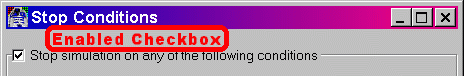
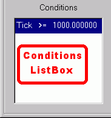
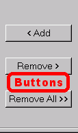
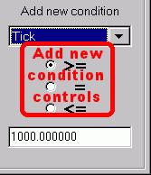
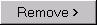
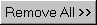

Enabled Checkbox
Conditions Listbox
Buttons
Add new condition Controls
|
The Stop Conditions form allows the user to specify conditions under which the simulation will automatically pause while running. Interaction with the Main form is still possible while the Stop Conditions form is visible.


Enabled Checkbox
The stop conditions are only active if this box is checked. It must also be checked in order to add/remove stop conditions.

Conditions Listbox
This box lists all conditions that are currently active. Use the buttons to add/remove conditions. Note that stop conditions are checked after each tick (timestep) so, for example, pressing the Run button when a condition is true is equivalent to pressing the Step button, the simulation will tick once and then pause.
Buttons
- Add Button
- Adds the new stop condition specified by the "Add new condition" controls.
-  Remove Button
- Removes the currently hilighted condition in the Conditions listbox from the list.
-  Remove All Button
- Removes all stop conditions.
Add new condition Controls
These controls allow you to specify a new stop condition which you can add by pressing the Add button. A condition consists of three elements: a parameter, a relation, and a value. Use these controls to set the elements:
Parameter Combobox
Choose which model parameter to watch with this combobox. The topmost parameter Tick indicates the simulation "tick" time.
Relation Radiobuttons
Three relations between the parameter and value are supported: greater than or equal to (>=), exactly equal (=), or less than or equal to (<=). Choose one of the radiobuttons to specify the relation.
Value Editbox
Each parameter is compared to a constant value and if the relation holds the simulation is paused. This box specifies the constant value.
|